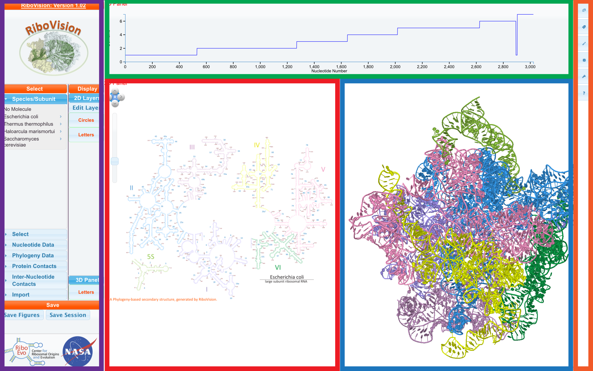

RiboVision is organized into 3 panels, plus the controls. The top panel (green, in screenshot below) is the "1D Panel", containing one dimensional data. Our main panel, where we have 2D secondary structure maps, is called the "2D Panel" (red). Third is the "3D Panel" (blue), containing Jmol, where you 3D representation (tertiary structure) of the ribosome. The display of data on 1D, 2D, and 3D panels can be synchronized, or set to different data sets. On the right side of the screen is the "ToolBar" (orange) with the major functional tools for the website. On the left side is our "Main Menu" (purple).
